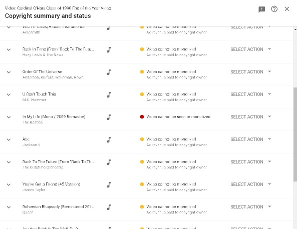

I was going to wait for our 30 year reunion before sharing this, but with so many of us sheltering in place due to COVID19, I felt it would be better to just share it right now. Please consider donating to the First Responders Children's Foundation.
Thanks to my mom, who held on to this VHS tape for 30 years.
You may ask, "Why not just upload this to YouTube?" I tried. The answer is that in 1990, when we made this video, there was no such thing as a "take down notice". So, I'm hosting it here instead.
